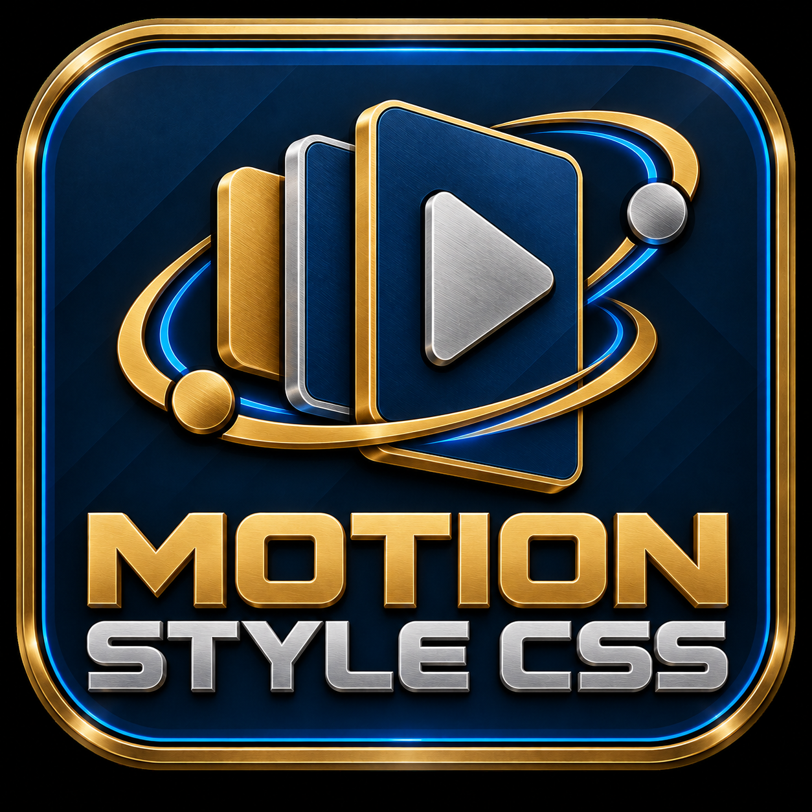

DESIGN SYSTEM / MOTION LAB
Every entrance
deserves an exit.
Seventeen expressive transition presets. Two independent phases. One tiny, framework-agnostic motion layer.

02 / LIVE PREVIEWREADY
COMPONENT.EXAMPLE
HELLO, MOTION
Make an entrance.
Motion adds character without sacrificing clarity.
01StructureMeasured timing
02MovementExpressive motion
03DetailClean execution
NO DEPENDENCIES60 FPS IS THE GOAL, NOT A GUARANTEE
Reduced-motion preference is respected automatically. Click Play to see the exit and entrance together.
03 / COPY CONFIGURATION
04 / STARTER RECIPES
Load a tuned baseline, preview it, then adjust the same controls.